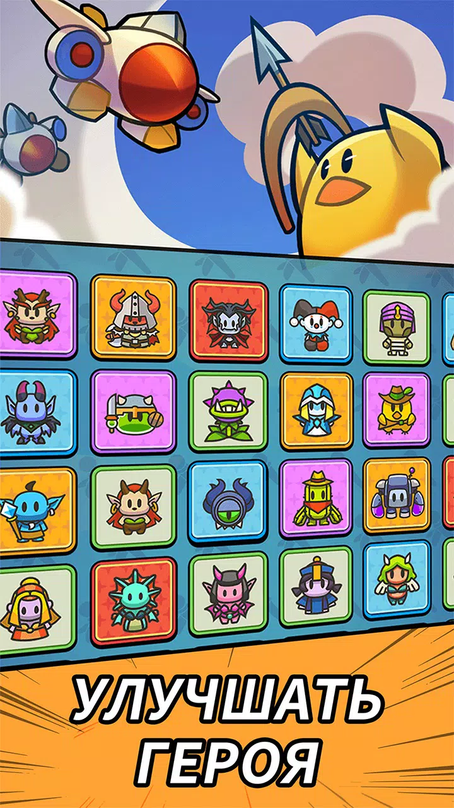
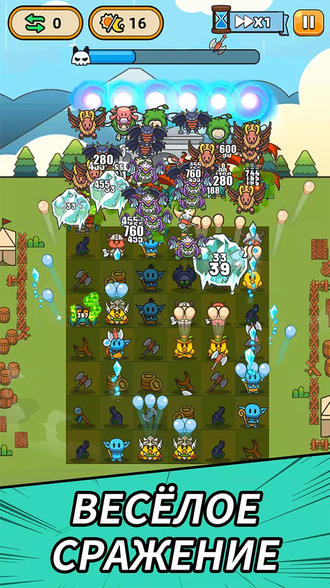

部分英雄的实际强度与品质定位脱节，导致新英雄设计缺少可靠参照。
海外长线运营 · 主策划 · 2024.04–2024.11
合合合英雄
产品已进入长线运营。面对历史投放、英雄强弱与资源价值缺少统一规划的问题，团队保留有效框架，重新建立可判断的价值尺度，并以领主模块与 PvP 打开新的增长空间。
我负责部分英雄与品质价值校准、领主模块、PvP 相关内容、大版本功能和部分运营活动设计。数据采用 AppMagic 的相对变化口径。
不推翻旧框架
先修复价值尺度
先修复价值尺度


公司孚谦科技
角色主策划
团队15 人
统计周期2024.05–2024.12
01
重新建立价值尺度。
重新建立价值尺度。
让存量内容重新可判断。
资源来源多、玩法多、养成系统多，但不同资源的产出与消耗价值没有统一尺度，英雄强弱也没有稳定的品质参照。
玩家能感知某些英雄过强、某些成长线没有意义，却无法理解投入与回报的关系。继续追加同类系统只会放大历史问题。
金币、体力、卡牌和材料各有多个来源，但部分资源形成缺口，另一些长期溢出。
成熟养成线逐渐失去长期吸引力，产品需要一个能与现有内容并存的新目标。


02
先建立统一模型，
先建立统一模型，
再校准具体英雄。
过程不是直接改一张英雄表，而是先盘点资源价值、玩家进度和品质强度，找到哪些问题可以通过局部调整解决。
从资源账本走到英雄强度
我把资源来源、消耗、溢出和缺口整理为统一价值表，再梳理每日免费产出与不同层级玩家的养成进度。资源价值稳定后，英雄强弱才有可比较的坐标。
盘点资源来源与消耗
逐项整理金币、钻石、体力、卡牌、强化石、天赋石和稀有材料的产出位置与消耗场景，识别短缺和溢出。
建立品质强度参照
按绿、蓝、紫、橙、红建立初始属性、成长和技能效率模型，让新英雄的能力区间可比较、可控制。
校准存量英雄
保留现有框架，对明显过强的英雄做局部调整；优先修正品质价值与实际强度之间最影响选择的关系。
补新的长期目标
新增独立“领主”模块，并配合 PvP 形成新的成长与竞争场景，让老玩家重新拥有追求方向。
绿色基础强度攻击 20 / 生命 100
蓝色稳定提升攻击 25 / 生命 120
紫色功能分化攻击 30–32 / 生命 150
橙色 / 红色高阶强度攻击 50–60 / 生命 250–350
03
兼顾存量修复，
兼顾存量修复，
也为下一版打开增长空间。
局部数值修复解决历史偏差；领主模块与 PvP 提供新的长期目标；统一品质模型让后续英雄不再重复失控。
不重构整套系统，降低对已经在玩用户的冲击，也避免把项目周期消耗在迁移与兼容上。
先解决影响判断的失衡把品质、初始属性、成长和技能效率放在同一模型里，后续英雄按区间验证，而不是每次单独拍脑袋。
让强度可解释在原有养成之上增加新的长期目标和竞争场景，配合运营活动创造新的参与理由。
为成熟产品补增长点结果来自“修复”与“新增”共同作用
数值校准让旧内容重新具有选择意义，领主模块和 PvP 提供新的长期目标。我的负责范围覆盖部分英雄与品质价值校准、领主及 PvP 相关内容、大版本功能与部分运营活动，不把整体增长归因于单个系统。
英雄强度、品质价值与养成投入重新落在同一套尺度上。
04
相对变化，说明方向有效。
AppMagic 监测周期显示 ARPU 与人均时长同时提升。这里使用相对指数表达，不代表绝对收入。
调整后，商业化与活跃度一起回升
100 代表调优前基线。数据变化由团队共同工作产生，不单独归因于领主、PvP 或某项数值调整。
ARPU 变化+30%100 → 130 相对指数
人均时长+25%100 → 125 相对指数
存量英雄局部校准保留框架，处理明显强度与品质错配
新增目标领主 + PvP建立新的长期成长与竞争场景
05
复盘：成熟产品，
复盘：成熟产品，
更要把每次改动算清楚。
成熟产品更需要控制试错成本。先理解历史失衡的原因，再决定哪些系统值得保留，并在同一套价值尺度下规划新增内容。
做对的
先盘点资源与品质模型，把“感觉强弱”转换成可计算的参照；修复与新增并行，避免只调数值或只加系统。
下一次的改进
在更早阶段记录每个资源与系统的目标价值，让后续设计不再依赖补丁式校准。对存量用户的分层影响也需要更早拆分验证。